Thank you very much for your purchase!
If you have any questions that are beyond the scope of this documentation, please feel free to email or contact us via my page.
Introduction
Zodkoo is a fully responsive WordPress Landing template. It's designed for describing your app, agency or business. A powerful visual composer is integrated in the bundle allowing you to craft any page very easily.
We really care for our buyers and so in case if you have any question or feedback, please feel free to get back to us.
Requirement
Basic Requirement for Theme
- Wordpress 4.0 or higher.
- PHP 5.4 or higher.
- MySQL 5 or higher.
- Memory Limit 128M or higher.
Recommended PHP Configuration Limits
- max_execution_time 180
- memory_limit 128M
- post_max_size 32M
- upload_max_filesize 32M
Structure
I have tried to follow the standards and modular structure while developing the theme. Following sections are explaining the theme File & Folder, structure, php file struture and plugins.
File & Folder Structure
├── assets/ │ ├── css/ │ ├── fonts/ │ ├── images/ │ └── js/ ├── content │ └── All Blog formate files ├── demo-data │ └── All Demo Import files ├── extend │ └── All Custom Functionality files ├── framework │ └── All framework files ├── languages │ └── All Language .pot files └── Other Required .php files
Theme Installation
1. Unzip zodkoo.zip file (the zip file is inside Theme files folder you have downloaded from ThemeForest). Connect to your FTP server and navigate to the folder where your WordPress is installed. Go to wp-content/themes/ and upload zodkoo folder (the path will look like this: wp-content/themes/zodkoo).
2. Open wordpress admin panel (navigate through web browser to the folder where you have installed the WordPress e.g www.your_domain.com/wp-admin/) and go Appearance > Themes on admin sidebar. Activate zodkoo theme.
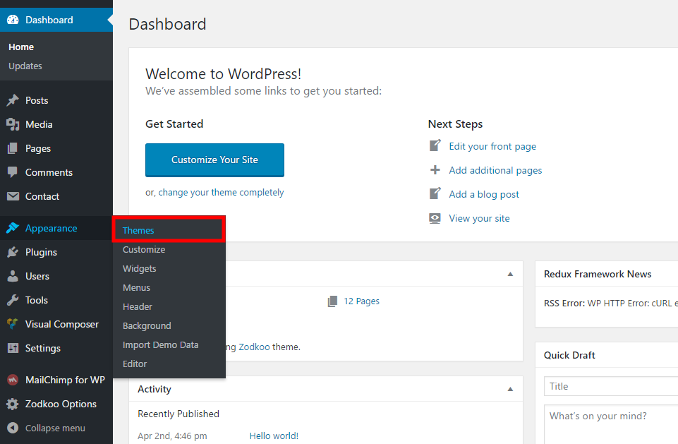Install Theme via WordPress Admin Panel
1. Open wordpress admin panel (navigate through web browser to the folder where you have installed the WordPress e.g www.your_domain.com/wp-admin/) and go Appearance > Themes on admin sidebar. Activate zodkoo theme.
2. Click Add New link and click Upload Theme link. Please upload zodkoo.zip file (the zip file is inside Theme files folder you have downloaded from ThemeForest).
3. Once the theme is done uploading it will automatically install.
4. After successfully installing theme activate the theme.
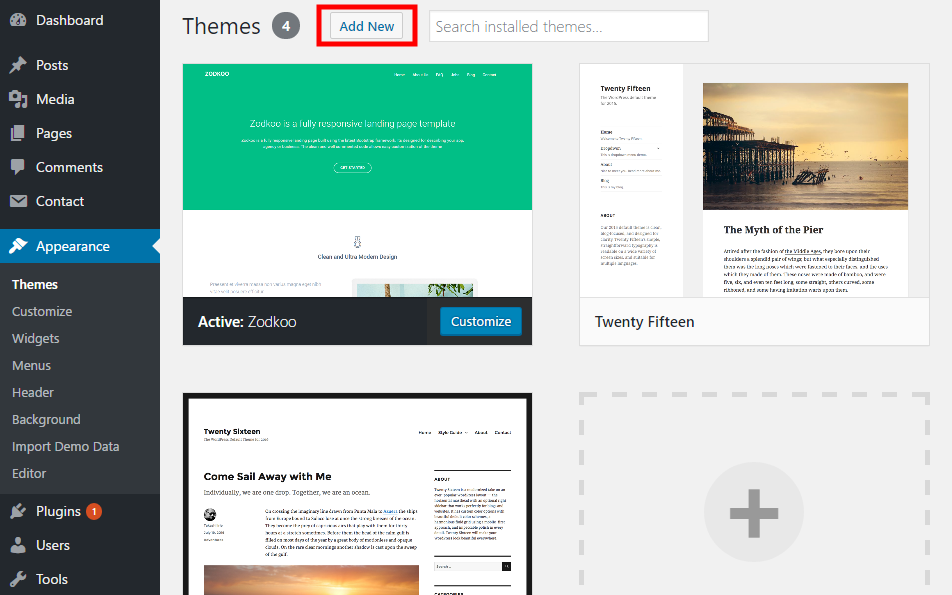Plugins Installation
After installing and activating the theme you will see the following message at the top of the page.
This theme requires the following plugins...
You should click Begin Installing plugins link.
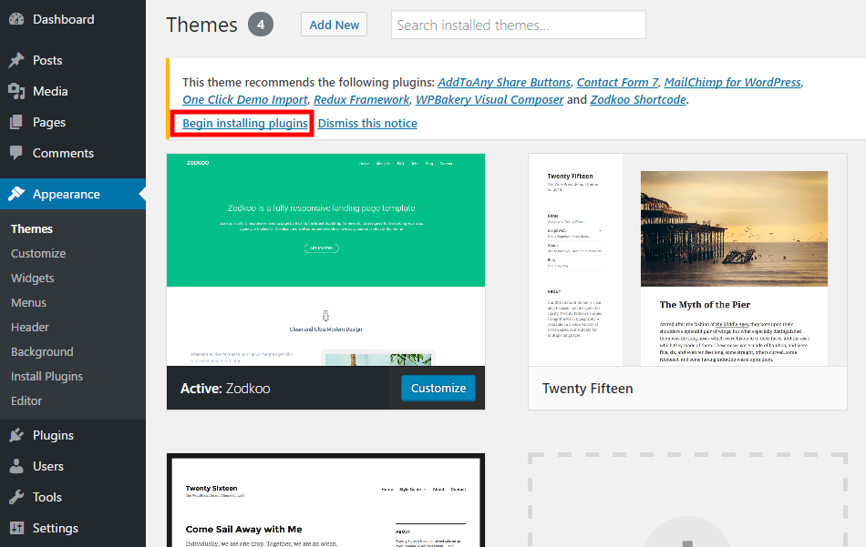You will be redirected to Install Required Plugins page, here you will find all of the theme required plugins. To install them just check all of them and from the drop down select install once installed do the same to activate them.

Demo Installation
Please go Appearance > Import Demo Data to import sample content as our demo sites.
When import dummy content, you should wait a few minutes.
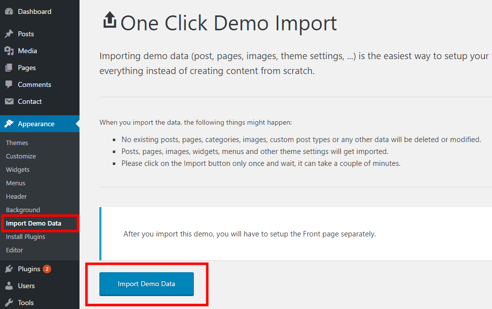Theme Options
Porto comes with advanced settings panel that is loaded with options. We have the options organized into logical tabbed sections, and each option has a description of what it will do on the front end. Because of the sizable amount of options Porto provides, we cannot go over them in full detail here in our documentation. We encourage you to please take some time and navigate through each tab to see what we offer. Go to Zodkoo Options on admin sidebar to access the setting options. See below for screenshots and short descriptions of our Theme Options panel.
1. General Option
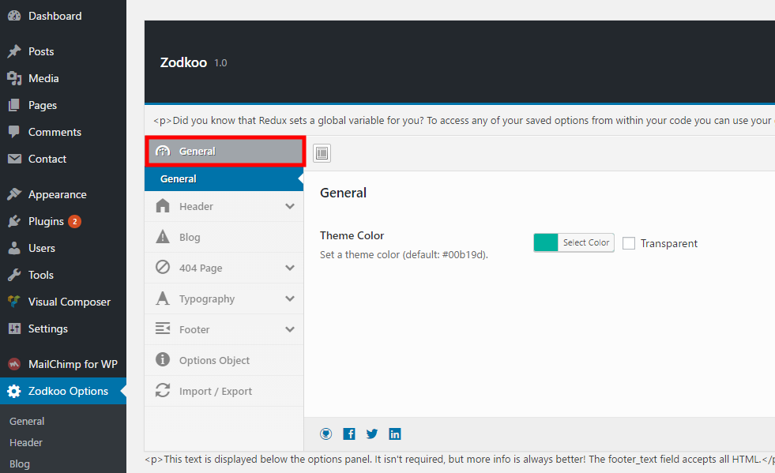2. Header Option
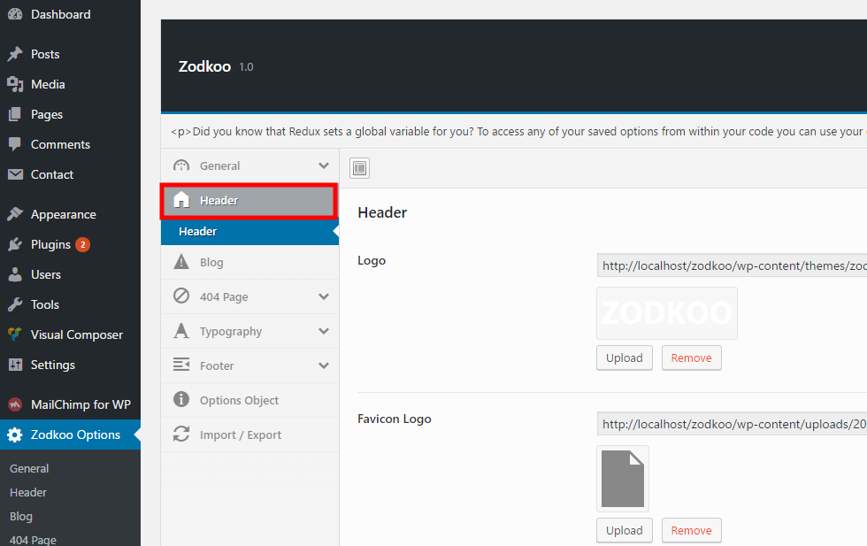3. Blog Option
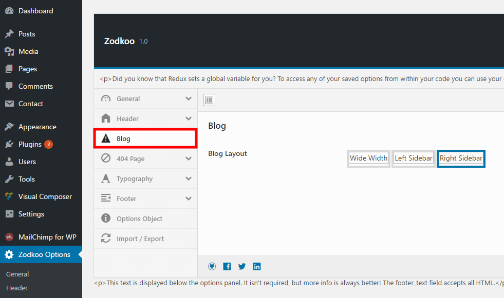4. 404 Option
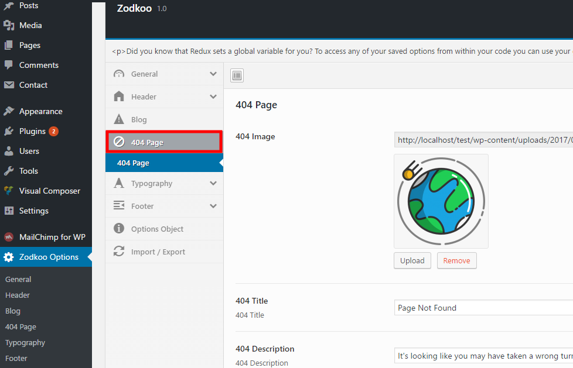5. Typography Option
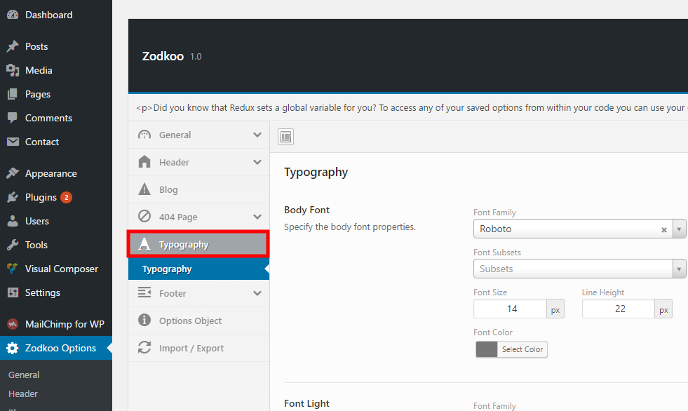6. Footer Option
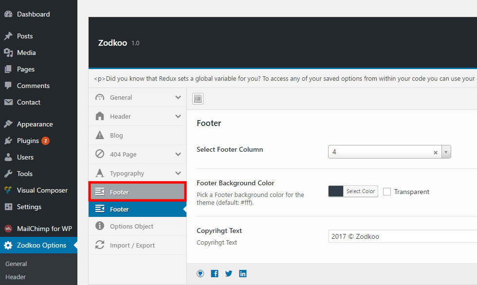7. Options Object
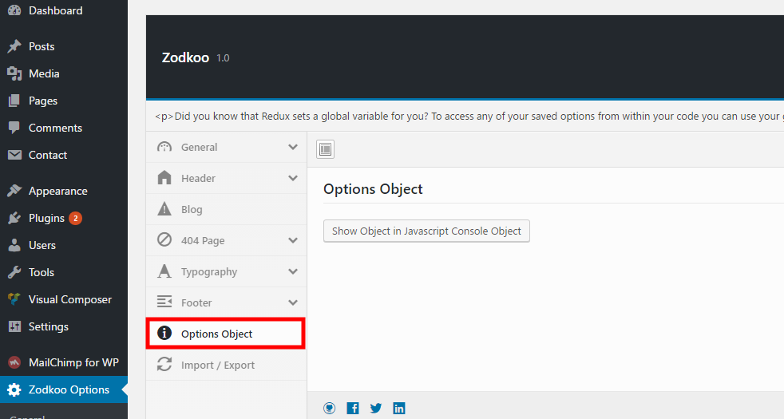8. Import / Export
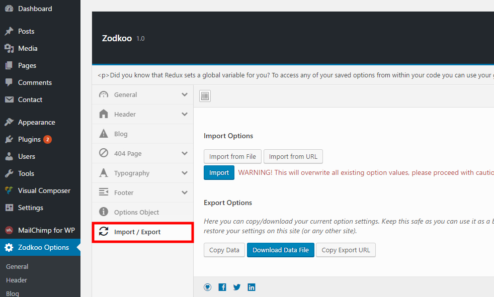Shortcodes
You should enable visual composer editor.
You should select the element. If you click the following button, will be show the popup.
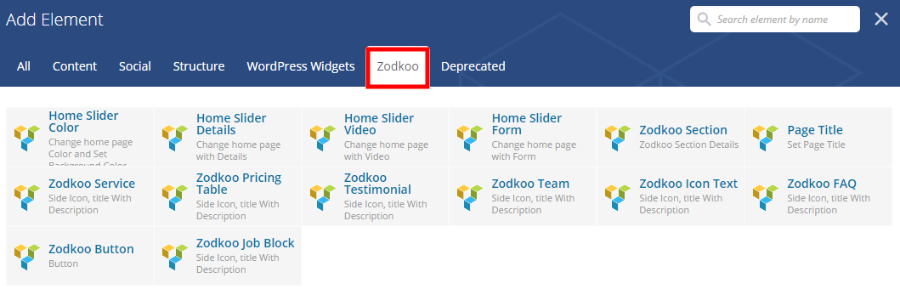Support
Once again thank you for your purchase. I'll be happy to answer the the questions you have related to the theme. In case if you have any suggestion or feature, request please feel free to contact me, I'll try to implement it and will release as part of future updates.
Stay Awesome!
- Coderthemes
Changelog
Version 1.0.0 18 Apr 2017
- Initial released
Copyright © 2017 Zodkoo.